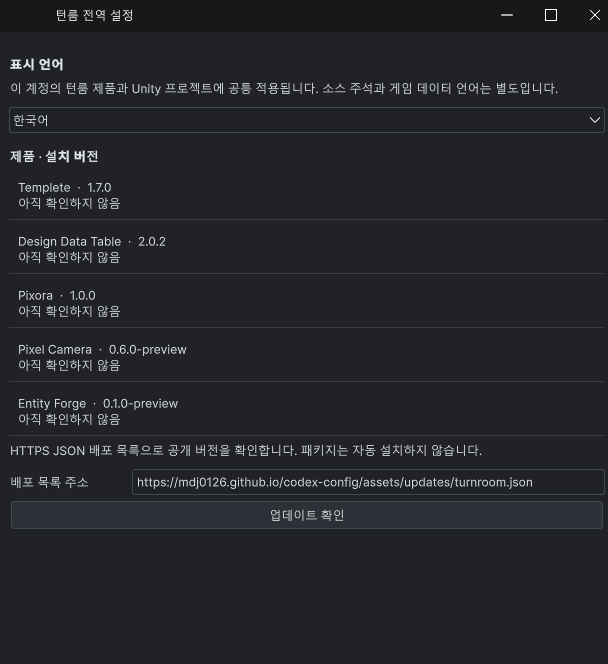
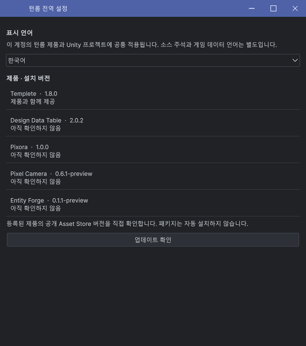

Tracefolio REPORTS & ISSUES
Tracefolio REPORTS & ISSUES턴룸 전역 설정 · 공통 언어와 Asset Store 업데이트 확인
완료전역 언어·제품 버전·스토어 확인을 한 창에 모으고 배포 목록 주소 입력을 제거했습니다.
작업 결과
전역 설정에서 언어를 바꾸면 열린 제품에 반영됩니다. 설치 버전과 Asset Store 공개 버전을 확인하며, 별도 배포 목록 URL 입력은 제거했습니다. 자동 컴파일 설정은 켜진 상태를 유지했습니다.
변경 내용
적용 내용
제품4개 → Settings·Windows·패키지 설치 → Development 순으로 메뉴를 구분했습니다. Development 코드는 고객 패키지에서 제외합니다. 지원 언어와 샘플 어셈블리 분리 규칙은 템플릿/전역 지침에 반영했습니다.


검증
Unity 6000.0.83f1 실제 마우스 영어 선택이 열린 Pixel Camera·Entity Forge·Pixora에 반영됐습니다. 선택 패널 닫기는 언어 값을 보존했고 한국어로 복원했습니다. 현재 씬·선택 및 AutoRefresh1을 보존했습니다.
업데이트 판정은 제품별 Store ID와 해당 공개 페이지의 단일 최신 버전을 검증한 뒤 설치 버전과 비교합니다. 임의 최신 버전이나 성공 상태를 만들지 않습니다. Native 파서·오류 처리 검사와 실제 네트워크 요청을 구분했습니다.
남은 사항
실제 DDT 공개 페이지 요청에서는 최신 버전 메타데이터를 얻지 못해 확인 불가로 표시했습니다. 비공개 초안은 공개 출시 정보가 없습니다. 모든 키보드/명암 조합과 전체 스크롤 구역을 검증한 것은 아닙니다. 애니메이션 GIF 내보내기 경로를 실제 Affinity에서 검증하지 못해 정지 전후 화면을 제공합니다.
사용자의 화면 조작 허용은 지속 실행 기록에 반영했습니다. 현재 목표 도구는 문구 편집을 제공하지 않아 도구의 옛 표시 문구를 수정했다고 보고하지 않습니다.
교훈 검토: 실제 재생성/설치 경합을 근거로 배포 파일·해시 고정 후 소비 규칙을 전역에 추가했습니다. 설치본·설정 저장소 해시가 같고 Sync.ps1 Push 및 main 푸시(8eb390e)를 확인했습니다. 다른 대화의 자동 반영은 주장하지 않습니다.
작업 시간
- 제안 시간: 4개 제품 전체 최대10시간. 2026-11-01 23:52:12 KST 시작, 2026-11-02 09:52:12 KST 마감.
- 실제로 완료된 시간: 전역 설정 실제 최종 한국어 화면 기록: 2026-11-02 08:35 KST. 전체 작업의 공개 배포 최종 확인은 이어서 진행합니다. 공통 설정만의 최초 착수 시각은 별도 미기록입니다.
- XERJ: 사용 — 공통 Editor의 언어·설정·팝업 심볼을 XERJ로 찾고 현재 소스 및 실제 Unity 결과로 대조했습니다. 범위 밖 SDK와 Runtime은 rg를 사용했습니다.